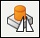
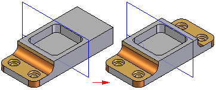
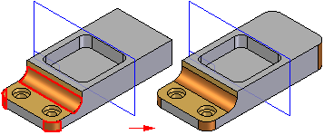

Mirror Copy Feature Command
Use the Mirror Copy Feature command

to construct a mirror copy of selected features. The copy is associative to the original features. If the original features are changed or deleted, the mirror features update. You cannot directly edit the mirror features.
If you want to mirror treatment features, such as rounds and drafts, you should include the parent features in the selection set to ensure success.

It is possible to mirror a treatment feature by itself using the Smart option in certain situations. For example, you can mirror a round feature by itself, but only the existing edges that are symmetrically aligned to the mirror plane are rounded.
